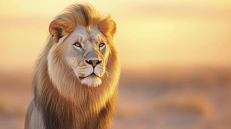
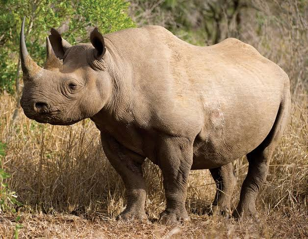

Wildlife
Learn about mammals, birds, reptiles, fish and other wildlife represented at the garden.
NATIONAL ZOOLOGICAL GARDEN
Discover wildlife, support conservation and learn about biodiversity.
The National Zoological Garden (NZG) is located in Pretoria, Gauteng and forms part of the South African National Biodiversity Institute (SANBI). The garden provides opportunities for public engagement with wildlife while supporting conservation, education and biodiversity awareness.
The website has been designed to make visitor information easier to find and to provide a clear introduction to the garden's conservation and educational role.

Learn about mammals, birds, reptiles, fish and other wildlife represented at the garden.

Discover opportunities for learning about animals, habitats, biodiversity and responsible environmental stewardship.

Understand the importance of conservation work and public awareness in protecting biodiversity.
Use the navigation above to learn more about the garden, its services and how to contact the organisation. Visitor information should be checked against the official SANBI information before a real visit because opening times, prices and arrangements can change.
Contact the Garden